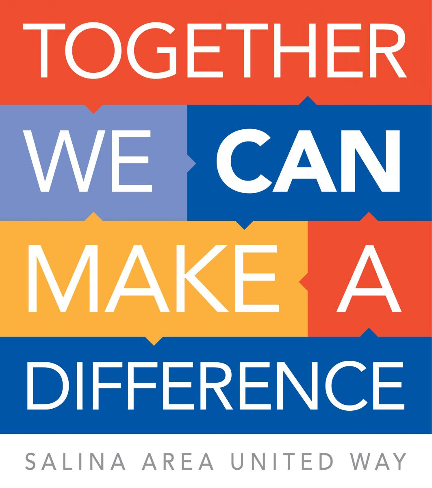
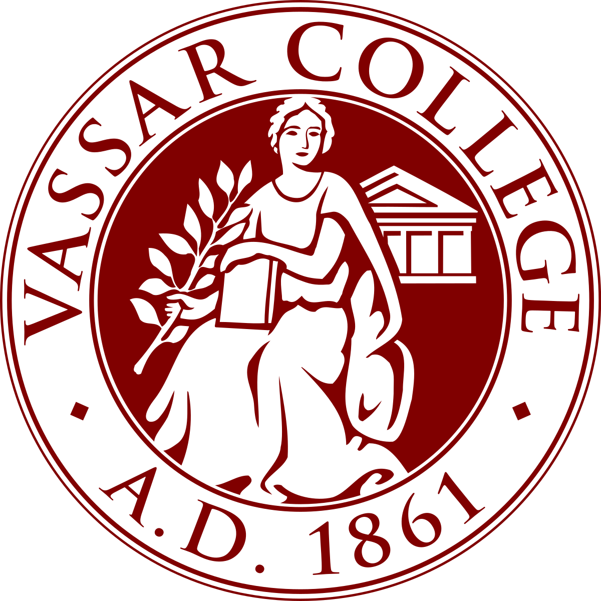
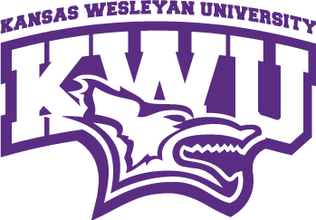

Sales Development Representative
Agility Recovery
Denver, CO: 2021-present
- Responsible for prospecting and contacting potential clients for three Account Executives
- Became proficient in Salesforce, Salesloft, and ZoomInfo
- Consistently met daily and monthly metrics and goals (100 contacts/day; opportunities qualified weekly, and other key performance indicators)
- Prioritized learning and development of human-centric selling through outside certification courses

Family Law Paralegal
Law Office of Bruce C. Barry
Manhattan, KS: 2020-2021
- Oversaw efficient office activities and operations, including client meetings, the delivery of subpoenas and discovery.
- Organized the supporting materials and prepared exhibits for trial cases
- Researched related statutes, decisions, and codes to support each case
- Authored legal documents like briefs, pleadings, and discovery packages
Customer Service Manager
ACT Call Center
Junction City, KS: 2017-2018
- Coordinated and oversaw the training of new customer service team members
- Responded to grievances, trends, variances, and complaints
- Reviewed analyses, reporting, KPIs, and operational metrics
- Provided empathetic guidance and long-term solutions to customers with issues
- Managed and reviewed daily CRM reports
- Achieved success as the #1 agent out of 500 in 2018: "Cenlar Employee of the Year"
Business Development Center Manager
Briggs Automotivee Center
Manhattan, KS: 2016-2018
- Trained entry-level staff to become valuable, effective Business Development Center Representatives increasing department success
- Studied changing industry trends and conducted extensive market research to identify competitor offers thus taking the lead in the organization in creating, identifying, capturing, and developing new business opportunities
- Resolved client issues using customized sales strategies to maintain a 70% cold call to appointment- set ratio and consistently met and exceeded the most difficult sales goals
- Maintained meticulous records, including sales, customer communication, conflicts and grievances, and statistical data using Salesforce and industry-specific software
- Engaged customers and built connections to drive long-term sales
Director of Marketing and Business Development
Money Automotive Center
Salina, KS: 2002-2016
- Cultivated productive customer relationships based on in-depth business knowledge and top-notch service
- Managed professional internet sales process, including generating new business, presenting products, and closing consistent sales
- Developed and executed marketing campaigns encompassing social media pages, blog posts, and marketing emails
- Identified opportunities for using social media platforms to reach the highest level of targeted audiences in company history
- Generated new marketing ideas and managed implementation from ideation and execution through quality assurance and final delivery
- Monitored competitor activities and product introductions in the market and made recommendations to increase market share
- Promoted culture within the company that identified everyone as a brand ambassador when interacting with the public, customers, and business partners
- Built new internet, business development, and marketing department by building a team of professionals skilled in networking with prospects, developing business proposals, and building lasting relationships

Leadership and Fundraising Intern
Salina Area United Way
Salina, KS: 2012-2014
- Made cold calls to raise donations for the annual fundraising drive
- Planned banquets and events to support fundraising and awareness efforts
- Devised strategy reports on how funds should best be allocated in every year's budget
Kindergarten ESL Teacher
Qingdao DaXue
Qingdao, China: 2008-2009
- Engaged students through conversation and used engaging lesson plans to hold interest and promote learning
- Maintained current knowledge of students' progress and educational needs and planned instruction accordingly
- Planned lessons to effectively teach as many as 250 students per semester from all different backgrounds and with varying ability levels

B.A. Political Science
Vassar College
Poughkeepsie, NY

B.S. Business Management
Kansas Wesleyan University
Salina, KS